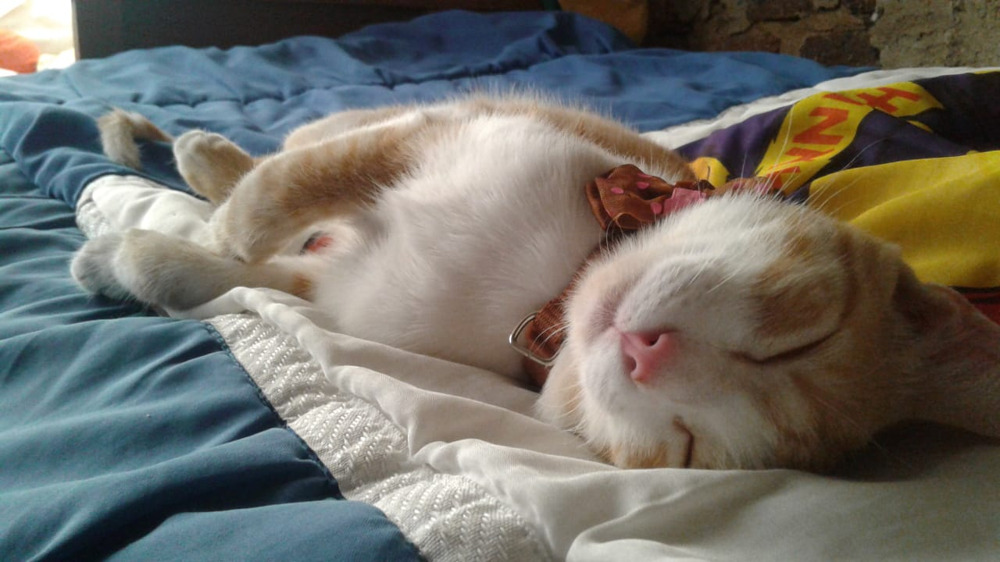
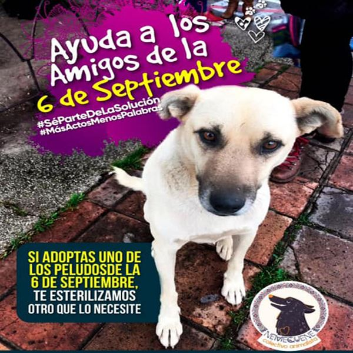
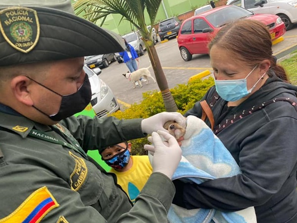
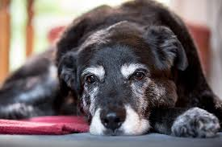

HISTORIAS DE ADOPCIONES

ADOPCIÓN DE MASCOTAS, TENDENCIA QUE CRECE EN PANDEMIA
“Yo quería una mascota desde que era niña, pero la pandemia me ayudó a convencer a mi mamá de tenerla porque yo vivo en un apartamento y mi mamá siempre ha creído que los animales deben habitar espacios grandes, por lo que nunca me dejó tener. Pero al
ver los rezagos emocionales que tenían los encierros en mí, a ella la motivó a darme el permiso”, cuenta Laura.
Noticia Completa

ÚNETE A LA SOLUCIÓN Y ADOPTA UN CANINO
El proceso de adopción es dirigido por la alcaldía de Sogamoso, fundación Natufauna y Nemequene, Junta Defensora de Animales y Dulce Causa.
Noticia Completa

CON JORNADA DE ADOPCIÓN BUSCAN CAMBIO DE VIDA PARA CANINOS ABANDONADOS EN PASTO
También se ofrecerá el servicio gratuito de desparasitación de mascotas, a través de la articulación con las fundaciones y Policía Ambiental.
Noticia Completa

ÁNGELES QUE CUIDAN A LOS 'CALEÑOS DE CUATRO PATAS'
A pesar de que no existe una estadística sobre el número de animales que son abandonados en Cali, diariamente los ciudadanos son testigos de la gran cantidad de perros y gatos que deambulan en las calles, producto de la insensibilidad e irresponsabilidad
de algunos propietarios, que los obligan a enfrentar situaciones críticas como hambre, frío, enfermedades y maltratos.
Noticia Completa